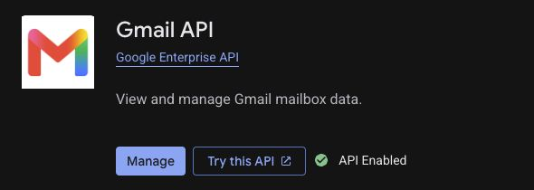
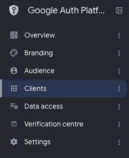
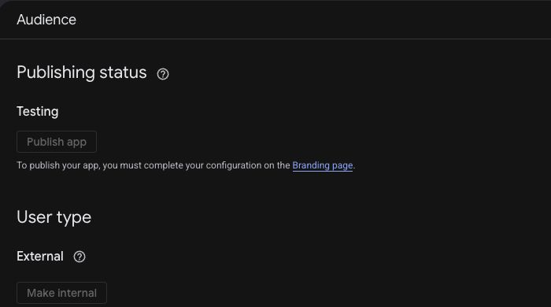
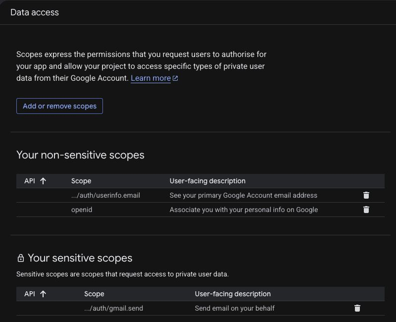
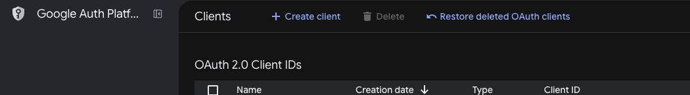
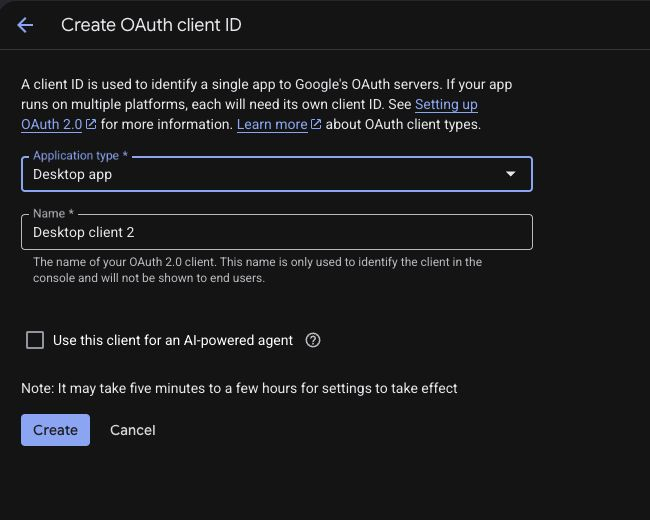
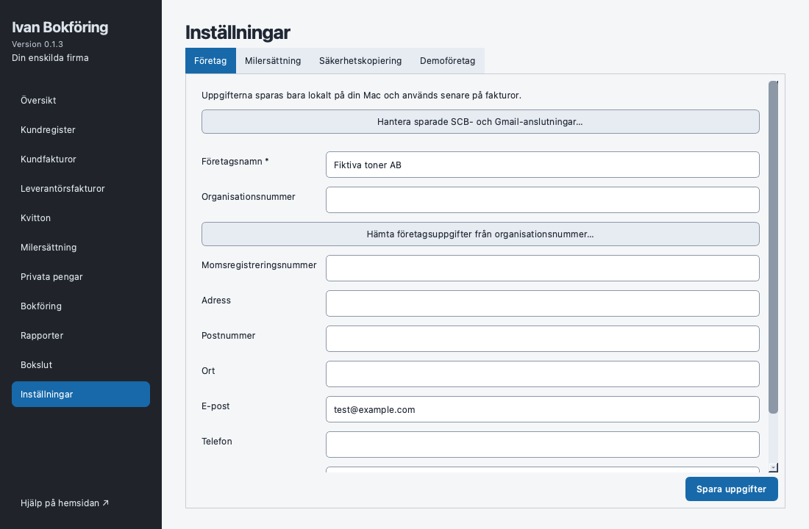
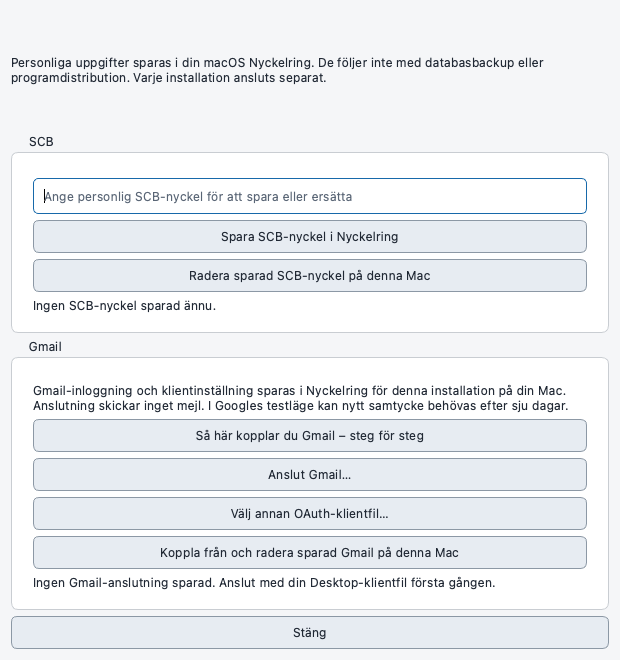

Hjälp för Mac · Gmail
Koppla Gmail,
steg för steg
Gör detta en gång för att kunna skicka fakturor från din Gmail-adress. Börja hos Google, hämta en klientfil och välj den i Ivan Bokföring.
Kontrollerad mot Googles anvisningar 8 oktober 2026. Google-bilderna är riktiga skärmbilder med privata delar utanför bildutsnittet; appbilderna visar en separat testmiljö. Google kan visa svenska eller engelska namn på knapparna.
Innan du börjar
Ha Gmail-kontot och Ivan Bokföring till hands. Ingen programmering, Terminal eller separat Python-installation behövs.
Klientfilen är en fil som slutar på .json. Den hämtas från Google och väljs på din Mac. Du ska inte skriva in Gmail-lösenordet i bokföringsprogrammet eller ladda upp filen på den här hemsidan.
Har du redan en Desktop-klientfil? Hoppa direkt till steg 7. Har du redan ett projekt? Välj det och kontrollera steg 2–6.
Steg 1 av 8 · Google
Välj eller skapa ditt Google-projekt
Öppna Google Cloud ↗- Logga in med kontot som ska äga projektet.
- Klicka på projektväljaren högst upp. Välj ditt befintliga Gmail-projekt, eller välj New project / Nytt projekt.
- För ett nytt projekt: ange exempelvis Ivan Bokföring Gmail, skapa det och välj det i projektväljaren.
Om en välkomstsida visas behöver du själv läsa och ta ställning till Googles villkor. Guiden kräver inte att du startar en betalprenumeration eller en gratis provperiod.
Klart när: ditt projekt är valt högst upp. Kontrollera att samma projekt är valt i alla följande Google-steg.
Steg 2 av 8 · Google
Aktivera Gmail API
Öppna Gmail API ↗- Kontrollera projektet högst upp.
- Klicka på Enable / Aktivera.
- Om du redan ser Manage / Hantera är tjänsten aktiverad och du kan gå vidare.


Klart när: Gmail API är aktiverat i ditt projekt.
Steg 3 av 8 · Google
Fyll i appens namn och kontakt
Öppna Branding ↗- Under Google Auth Platform → Branding, klicka på Get started / Kom igång om inställningen är ny.
- Ange ett tydligt appnamn, exempelvis Ivan Bokföring – min Gmail.
- Välj din adress som supportadress och ange kontaktadress när Google frågar.
- För ett vanligt privat Gmail-konto: välj External / Extern när Google frågar om målgrupp. Internal är för en Google Workspace-organisation.
- Läs eventuella villkor och slutför inställningen om du accepterar dem. Har projektet redan dessa uppgifter behöver du inte skapa om det.


Klart när: appnamn och kontakt är sparade och menyn visar Audience, Clients och Data access.
Steg 4 av 8 · Google
Lägg till adressen du ska skicka från
Öppna Audience ↗- För den här testanslutningen: behåll Testing / Testning.
- Under Test users / Testanvändare, välj Add users / Lägg till användare.
- Ange Gmail-adressen som du ska ansluta i programmet och spara. Om fler personer ska ansluta till samma testklient måste deras adresser också vara tillagda.
I testläge kan Google kräva att du ansluter igen efter sju dagar. Det är inte samma sak som att projektet eller klientfilen måste skapas om.


Klart när: din avsändaradress finns bland testanvändarna.
Steg 5 av 8 · Google
Välj behörigheterna programmet använder
Öppna Data access ↗Välj Add or remove scopes / Lägg till eller ta bort behörigheter. Sök efter och lägg till dessa tre, eller använd inmatningen för manuella scopes om Google visar den:
https://www.googleapis.com/auth/gmail.send
openid
https://www.googleapis.com/auth/userinfo.emailSpara valet. gmail.send används för att skicka mejl; de andra visar vilket konto som är avsändare. Ivan Bokföring begär inte åtkomst för att läsa eller radera inkorgen.


Klart när: de tre behörigheterna är tillagda.
Steg 6 av 8 · Google
Skapa Desktop-klienten och hämta JSON-filen
Öppna Clients ↗- Välj Create client / Skapa klient.
- Välj Desktop app / Datorapp som applikationstyp. Välj inte Web application, API key eller Service account.
- Ange ett namn, exempelvis Ivan på Mac, och klicka på Create / Skapa.
- Hämta klientens JSON-fil med nedladdningsknappen. Den kan finnas i skapandedialogen eller på klientens detaljsida.
- Låt filen ligga på en plats du hittar, exempelvis Hämtade filer. Filnamnet kan börja med client_secret_ och ska sluta på .json. Du behöver inte döpa om eller öppna filen.




Klart när: en .json-fil finns på din Mac.
Steg 7 av 8 · Ivan Bokföring
Välj klientfilen i programmet
- Öppna Inställningar → Företag.
- Klicka på Hantera sparade SCB- och Gmail-anslutningar….
- Under Gmail: klicka på Anslut Gmail….
- I filväljaren: öppna Hämtade filer, välj din .json-fil och öppna den.
- Google öppnas i webbläsaren. Välj samma Gmail-adress som du lade till som testanvändare och granska vilka behörigheter appen begär.
- Om du godkänner behörigheterna, slutför Googles anslutning och gå tillbaka till programmet.


Du kan också ansluta i fakturans Skicka…-dialog. Att ansluta Gmail skickar inget mejl. Om du ska byta klientfil använder du Välj annan OAuth-klientfil….


Steg 8 av 8 · Kontrollera
Kontrollera att rätt adress är ansluten
Programmet ska visa din Gmail-adress och att anslutningen är sparad eller ansluten. Klientinställning och förnyelsebehörighet sparas i macOS Nyckelring för denna installation.
När du vill skicka en faktura: välj en färdigställd faktura, öppna Skicka… och kontrollera Från, Till, ämne, text och PDF. Mejlet skickas först när du granskat och tryckt på Skicka via Gmail.
Klart! Du behöver normalt inte välja klientfilen igen. En annan Mac eller separat utvecklingsinstallation behöver sin egen anslutning.
Om det tar stopp
Google säger att åtkomsten är blockerad
Kontrollera projektet och steg 4: finns exakt den adress du loggar in med bland testanvändarna? För ett arbets- eller skolkonto kan administratören också begränsa anslutningar.
Google visar att appen inte är verifierad
En egen testklient kan ge en sådan varning. Kontrollera att appnamn, projekt och efterfrågade behörigheter är de du avser. Fortsätt inte med en okänd app eller oväntade behörigheter. En blockering kan kräva ändringar hos Google eller hjälp från administratören.
Programmet säger att klientfilen är fel
Hämta JSON från en klient av typen Desktop app enligt steg 6. En API-nyckel, Web application-klient eller servicekontofil fungerar inte. Välj den riktiga .json-filen, inte en bild eller ZIP.
Gmail fungerade förra veckan men behöver anslutas igen
För External med Testing gäller normalt sju dagars förnyelsebehörighet när Gmail används. Klicka Anslut Gmail igen och godkänn hos Google. Programmet återanvänder sparad klientinställning.
JSON-knappen syns inte där guiden visar den
Google ändrar ibland gränssnittet. Öppna Clients, välj din Desktop-klient och leta efter nedladdning av JSON. Läs även Googles klientguide nedan.
Jag vill koppla från
Använd Koppla från och radera sparad Gmail på denna Mac i appen. Det tar bort appens lokala Gmail-anslutning. Googles övergripande samtycke kan hanteras under Google-kontots anslutningar.